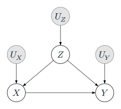
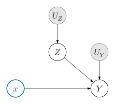
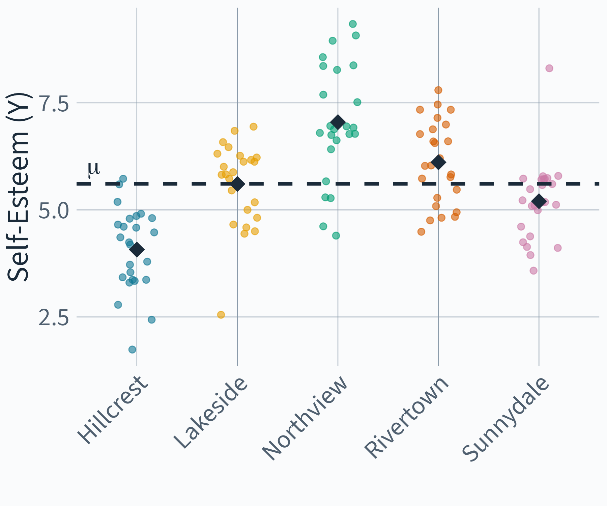
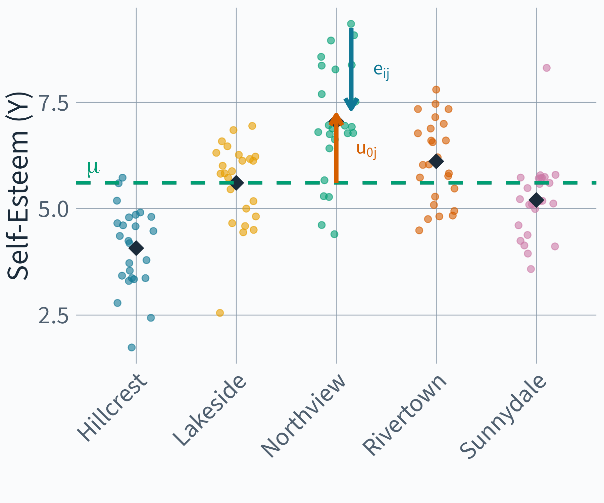
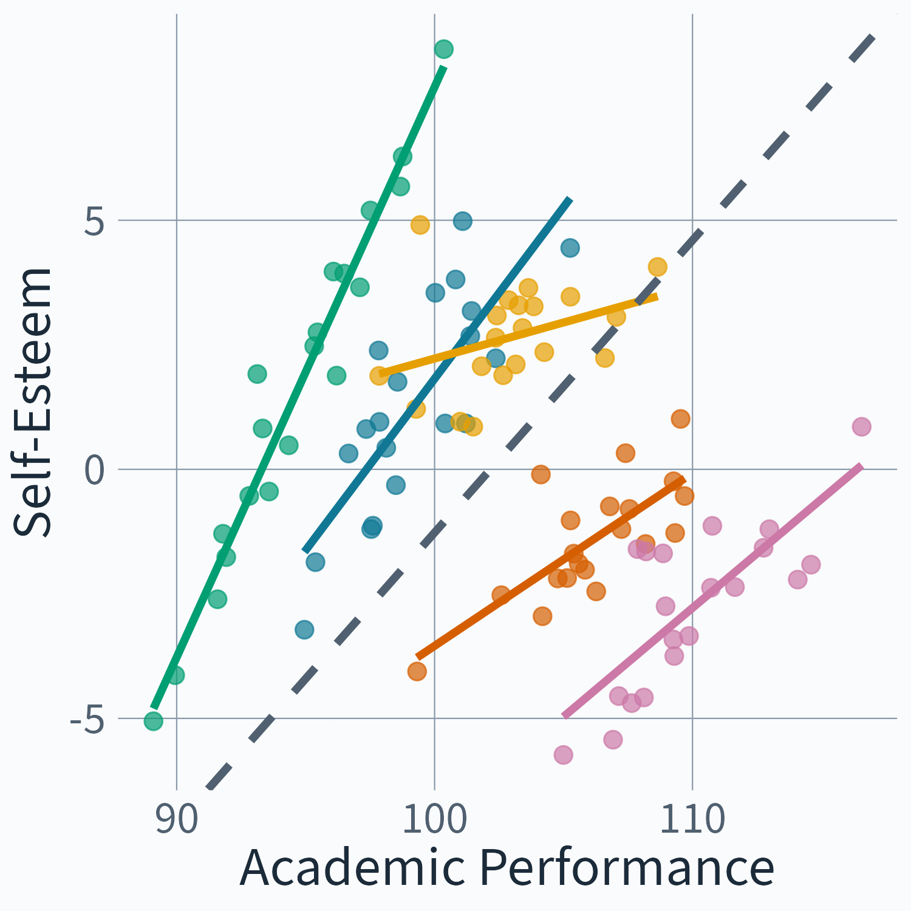
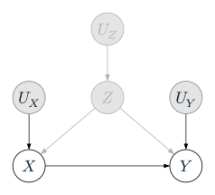
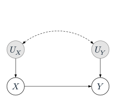
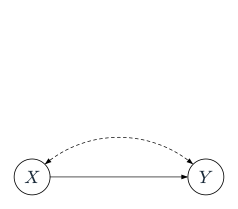

Introduction to Graphical Causal Inference
From Averages to Heterogeneity
![]()
March 10, 2026
Day 2
Adapted from Watson et al. (2025, fig. 1)
What do we know about Open Science?
| Variable | What the literature tells us |
|---|---|
| Open Data | Incentives and mandates drive sharing (Woods and Pinfield 2022) |
| Citations | Data sharing associated with citation advantage (Piwowar et al. 2007) |
| Reproducibility | Open data enables verification — but evidence is mixed (Hardwicke et al. 2021) |
| Published | Journal mandates link data sharing to publication (Ross-Hellauer et al. 2022) |
| Rigour | Peer review quality varies substantially (Goodman et al. 1994) |
| Novelty | Novel contributions get reused and cited more |
| Data Reuse | Reuse of shared data leads to citation of originals |
| Field | Citation norms and data sharing culture differ across disciplines (Waltman and Van Eck 2019) |
Klebel and Traag (2024)
Adapted from Watson et al. (2025, fig. 1)
Define the Causal Question
Does sharing data openly cause more citations?
Exposure
Open Data
binary: shared or not
Outcome
Citations
count
Klebel and Traag (2024)
Adapted from Watson et al. (2025, fig. 1)
Specify the Theoretical Estimand
Individual causal effect
\text{ITE} \;=\; \tau_i \;=\; Y_i(\text{open}) \;-\; Y_i(\text{not open})
\downarrow average over population
\text{ATE} \;=\; \tau \;=\; \mathbb{E}\big[Y_i(\text{open}) \;-\; Y_i(\text{not open})\big]
Unit-specific quantity
How many more citations if this study shared data?
Target population
All published studies? Only in psychology?
Lundberg, Johnson & Stewart (2021)
Adapted from Watson et al. (2025, fig. 1)
Exercise: DAGitty
moritzketzer.github.io/iqb-workshop
Open dagitty-open-science.R
Breakout rooms in pairs (~30 min), then 5 min break before debrief.
Adapted from Watson et al. (2025, fig. 1)
Adapted from Watson et al. (2025, fig. 1)
Adapted from Watson et al. (2025, fig. 1)
Heterogeneity
Gelman et al. (2023)
A Linear SCM with Interaction
Structural Equations
\begin{aligned} Z &= U_Z \\ X &= \beta^{XZ} Z + U_X \\ Y &= \beta^{YX} X + \beta^{YZ} Z + \textcolor{#D55E00}{\beta^{YXZ} XZ} + U_Y \end{aligned}
Distributional Assumptions
\begin{pmatrix} U_Z \\ U_X \\ U_Y \end{pmatrix} \sim \mathcal{N}\left(\begin{pmatrix} 0 \\ 0 \\ 0 \end{pmatrix}, \begin{pmatrix} \sigma^2_Z & 0 & 0 \\ 0 & \sigma^2_X & 0 \\ 0 & 0 & \sigma^2_Y \end{pmatrix}\right)

Graph Surgery: Interaction Case
Structural Equations
\begin{aligned} Z &= U_Z \\ X &= \color{#107895}{x} \\ Y &= \beta^{YX} \textcolor{#107895}{x} + \beta^{YZ} Z + \textcolor{#D55E00}{\beta^{YXZ} \textcolor{#107895}{x} Z} + U_Y \end{aligned}
Distributional Assumptions
\begin{pmatrix} U_Z \\ \textcolor{lightgray}{U_X} \\ U_Y \end{pmatrix} \sim \mathcal{N}\left(\begin{pmatrix} 0 \\ \textcolor{lightgray}{0} \\ 0 \end{pmatrix}, \begin{pmatrix} \sigma^2_Z & 0 & 0 \\ 0 & \textcolor{lightgray}{\sigma^2_X} & 0 \\ 0 & 0 & \sigma^2_Y \end{pmatrix}\right)

CATE = \mathbb{E}[Y \mid do(X = x), Z = z] - \mathbb{E}[Y \mid do(X = x'), Z = z]
CATE = \textcolor{#107895}{\beta^{YX}} + \textcolor{#D55E00}{\beta^{YXZ}} z
| Estimand | ||
|---|---|---|
| ATE | Average over all Z | \textcolor{#107895}{\beta^{YX}} |
| CATE | At a specific Z = z | \textcolor{#107895}{\beta^{YX}} + \textcolor{#D55E00}{\beta^{YXZ}} z |
Gelman et al. (2023)
| Estimand | Population | Averages over | |
|---|---|---|---|
| ATE | = E[\beta_j] | All schools | School differences |
| CATE(j) | = \beta_j | School j | Nothing — school-specific |
Backdoor criterion: condition on Z. Done?
But Z = school is not a variable — it’s a cluster.
What’s Inside Z?
Multilevel Models

Random Intercept Model
\begin{aligned} y_{ij} &= \eta_{0j} + e_{ij} \\ \eta_{0j} &= \mu + u_{0j} \end{aligned}
Random Intercept Model
\begin{aligned} y_{ij} &= \mu + u_{0j} + e_{ij} \end{aligned}

Random Intercept Model
\begin{aligned} y_{ij} &= \color{#009E73}{\mu}\color{black} + \color{#D55E00}{u_{0j}}\color{black} + \color{#107895}{e_{ij}}\color{black} \end{aligned}
Exercise: What Do the Error Terms Mean?
Look at the Random Intercept Model:
y_{ij} = \color{#009E73}{\mu}\color{black} + \color{#D55E00}{u_{0j}}\color{black} + \color{#107895}{e_{ij}}\color{black}
Discuss with your neighbor:
- What do \color{#D55E00}{u_{0j}} and \color{#107895}{e_{ij}} represent from a Structural Causal Model perspective?
- Can you name concrete examples of what these unobserved causes could be?
- Try to sketch the simplest possible DAG for this model — one observed node, two latent error nodes.
- What does it mean that we split “unobserved causes” into a between-cluster and a within-cluster component?
(Illustration of the Big Fish Little Pond Effect based on simulated data, cf. Marsh et al. 2008)
(Illustration of the Big Fish Little Pond Effect based on simulated data, cf. Marsh et al. 2008)
(Illustration of the Big Fish Little Pond Effect based on simulated data, cf. Marsh et al. 2008)

Multi-Level Notation
\begin{aligned} y_{ij} &= \eta_{0j} + \eta_{1j}x_{ij} + e_{ij} \\ \eta_{0j} &= \mu + u_{0j} \\ \eta_{1j} &= \beta + u_{1j} \end{aligned}
Multi-Level Regression Notation
\begin{aligned} y_{ij} &= \eta_{0j} + \eta_{1j}x_{ij} + e_{ij} \\ \eta_{0j} &= \mu + u_{0j} \\ \eta_{1j} &= \beta + u_{1j} \end{aligned}
Mixed-Model Notation
y_{ij} = \color{#D55E00}(\mu + u_{0j})\color{black} + \color{#D55E00}(\beta + u_{1j})\color{black} x_{ij} + e_{ij}
Mixed-Model Notation
y_{ij} = \mu + \beta x_{ij} + u_{1j}x_{ij} + u_{0j} + e_{ij}
Distributional Assumptions
\begin{aligned} \begin{bmatrix} u_{0j}\\ u_{1j} \end{bmatrix} &\sim N\left (\begin{bmatrix} 0\\ 0 \end{bmatrix}, \begin{bmatrix} \psi_{11} \\ \psi_{21} & \psi_{22} \end{bmatrix}\right ) \\ \begin{bmatrix} e_{ij} \end{bmatrix} &\sim N(0,\sigma^2_e) \end{aligned}
Common Path Diagrams for Multilevel Models
(adapted from Curran and Bauer 2007)
(adapted from Muthén and Muthén 2017)
(adapted from Mehta and Neale 2005)
(adapted from Skrondal and Rabe-Hesketh 2004)
None of them clearly map on to the formal class of DAGs
\begin{array}{c} \text{(Multi-level) SCM} = (\mathcal S, \mathcal P, \mathcal G) \end{array}
\mathcal S = Set of (Multilevel) Structural Equations
\mathcal P = Probability distribution over the exogenous variables
\mathcal G = Graph (DAG or DAMG)
What is a DAMG?
Back to our example
Structural Equations
\begin{aligned} Z &= U_Z \\ X &= \beta^{XZ} Z + U_X \\ Y &= \beta^{YX} X + \beta^{YZ} Z + U_Y \end{aligned}
Distributional Assumptions
\begin{pmatrix} U_Z \\ U_X \\ U_Y \end{pmatrix} \sim \mathcal{N}\left(\begin{pmatrix} 0 \\ 0 \\ 0 \end{pmatrix}, \begin{pmatrix} \sigma^2_Z & 0 & 0 \\ 0 & \sigma^2_X & 0 \\ 0 & 0 & \sigma^2_Y \end{pmatrix}\right)
What if Z is unobserved?
Structural Equations
\begin{aligned} \color{lightgray} Z &\color{lightgray}= U_Z \\ X &= \beta^{XZ} \textcolor{lightgray}{Z} + U_X \\ Y &= \beta^{YX} X + \beta^{YZ} \textcolor{lightgray}{Z} + U_Y \end{aligned}
Distributional Assumptions
\begin{pmatrix} \textcolor{lightgray}{U_Z} \\ U_X \\ U_Y \end{pmatrix} \sim \mathcal{N}\left(\begin{pmatrix} \textcolor{lightgray}{0} \\ 0 \\ 0 \end{pmatrix}, \begin{pmatrix} \textcolor{lightgray}{\sigma^2_Z} & 0 & 0 \\ 0 & \sigma^2_X & 0 \\ 0 & 0 & \sigma^2_Y \end{pmatrix}\right)

Directed Acyclic Mixed Graphs
Structural Equations
\begin{aligned} X &= E^X \\ Y &= \beta^{YX} X + E^Y \end{aligned}
Distributional Assumptions
\begin{pmatrix} E^X \\ E^Y \end{pmatrix} \sim \mathcal{N}\left(\begin{pmatrix} 0 \\ 0 \end{pmatrix}, \begin{pmatrix} \sigma^2_X & \textcolor{#D55E00}{\sigma_{XY}} \\ \textcolor{#D55E00}{\sigma_{XY}} & \sigma^2_Y \end{pmatrix}\right)

Directed Acyclic Mixed Graphs
Structural Equations
\begin{aligned} X &= E^X \\ Y &= \beta^{YX} X + E^Y \end{aligned}
Distributional Assumptions
\begin{pmatrix} E^X \\ E^Y \end{pmatrix} \sim \mathcal{N}\left(\begin{pmatrix} 0 \\ 0 \end{pmatrix}, \begin{pmatrix} \sigma^2_X & \textcolor{#D55E00}{\sigma_{XY}} \\ \textcolor{#D55E00}{\sigma_{XY}} & \sigma^2_Y \end{pmatrix}\right)

Multi-level Equations
\begin{aligned} \color{#D55E00} X_{ij} &\color{#D55E00}= \eta_{j}^{X\mu} + E_{ij}^{X} \\ Y_{ij} &= \eta_{j}^{Y\mu} + \eta_{j}^{YX} X_{ij} + E_{ij}^{Y} \\ \\ \color{#D55E00} \eta_{j}^{X\mu} &\color{#D55E00} = \mu^{X} + U_{j}^{X\mu} \\ \eta_{j}^{Y\mu} &= \mu^{Y} + U_{j}^{Y\mu} \\ \eta_{j}^{YX} &= \beta^{YX} + U_{j}^{YX} \end{aligned}
Mixed-Model Form = Structural Form
\begin{aligned} X_{ij} &= \mu^{X} + U_{j}^{X\mu} + E_{ij}^{X} \\ Y_{ij} &= (\mu^{Y} + U_{j}^{Y\mu}) + (\beta^{YX} + U_{j}^{YX})X_{ij} + E_{ij}^{Y} \end{aligned}
Mixed-Model Form = Structural Form
\begin{aligned} X_{ij} &= \mu^{X} + U_{j}^{X\mu} + E_{ij}^{X} \\ Y_{ij} &= \mu^{Y} + \color{#D55E00}\beta^{YX}\color{black} X_{ij} + U_{j}^{YX}X_{ij} + U_{j}^{Y\mu} + E_{ij}^{Y} \end{aligned}
From Single Level to Multi-Level Graphs
Plate Notation
From Independent to Dependent Units
Multi-Level DA(M)G’s
\begin{aligned} Y_{\color{#D55E00}1} &= \mu^Y + \beta^{YX} X_{1} + U^{YX} X_{1} + U^{Y\mu} + E_{1}^Y \\ X_{\color{#D55E00}1} &= \mu^X + U^{X\mu} + E_{1}^X \\ Y_{\color{#D55E00}2} &= \mu^Y + \beta^{YX} X_{2} + U^{YX} X_{2} + U^{Y\mu} + E_{2}^Y \\ X_{\color{#D55E00}2} &= \mu^X + U^{X\mu} + E_{2}^X \\ Y_{\color{#D55E00}3} &= \mu^Y + \beta^{YX} X_{3} + U^{YX} X_{3} + U^{Y\mu} + E_{3}^Y \\ X_{\color{#D55E00}3} &= \mu^X + U^{X\mu} + E_{3}^X \end{aligned}
\begin{aligned} Y_{1} &= \color{#D55E00}f_{Y1}\color{black}(X_{1}, U^{Y\mu}, U^{YX}, E_{1}^Y) \\ X_{1} &= \color{#D55E00}f_{X1}\color{black}(U^{X\mu}, E_{1}^X) \\ Y_{2} &= \color{#D55E00}f_{Y2}\color{black}(X_{2}, U^{Y\mu}, U^{YX}, E_{2}^Y) \\ X_{2} &= \color{#D55E00}f_{X2}\color{black}(U^{X\mu}, E_{2}^X) \\ Y_{3} &= \color{#D55E00}f_{Y3}\color{black}(X_{3}, U^{Y\mu}, U^{YX}, E_{3}^Y) \\ X_{3} &= \color{#D55E00}f_{X3}\color{black}(U^{X\mu}, E_{3}^X) \end{aligned}
Distributional Assumptions
\begin{aligned} \begin{bmatrix} U_{j}^{X\mu}\\ U_{j}^{Y\mu}\\ U_{j}^{YX} \end{bmatrix} &\sim N \left ( \begin{bmatrix} 0\\ 0\\ 0 \end{bmatrix}, \begin{bmatrix} \psi_{U_{j}^{X\mu}} & & \\ \psi_{U_{j}^{X\mu} U_{j}^{Y\mu}} & \psi_{U_{j}^{Y\mu}} & \\ \psi_{U_{j}^{X\mu} U_{j}^{YX}} & \psi_{U_{j}^{Y\mu} U_{j}^{YX}} & \psi_{U_{j}^{YX}} \end{bmatrix} \right ) \\ \begin{bmatrix} E_{ij}^{X} \\ E_{ij}^{Y} \end{bmatrix} &\sim N\left (\begin{bmatrix} 0\\ 0 \end{bmatrix}, \begin{bmatrix} \sigma^2_{E^X} & \\ 0 & \sigma^2_{E^Y} \end{bmatrix}\right ) \end{aligned}
Mixed-Model Reduced Form
\begin{aligned} \mathbb E[Y_{ij} \mid X_{ij} = x_{ij}] &= \underbrace{\color{lightgray}{\mathbb{E}[Y] - \mu^X \cdot \text{slope}}}_{\text{intercept}} + \underbrace{\left(\color{#D55E00}\beta^{YX}\color{black} + \text{bias}\right)}_{\text{slope}} x_{ij} \end{aligned}
\text{bias} = \frac{ \color{#D55E00}\psi_{U^{X\mu} U^{Y\mu}} + \mu^X \psi_{U^{X\mu} U^{YX}} + \sigma_{E^X E^Y} }{\psi_{U^{X\mu}} + \sigma^2_{E^X}}
Mixed-Model Interventional Form
\begin{aligned} \mathbb E[Y_{ij} \mid do(X_{ij} = x_{ij})] &= \underbrace{ \mathbb{E}[Y] - \mu^X \cdot \color{#D55E00}\beta^{YX}\color{black} }_{ \text{intercept} } + \underbrace{ \color{#D55E00}\beta^{YX}\color{black} }_{ \text{slope} } x_{ij} \end{aligned}
Group-Mean Centering
X_{ij} - \bar{X}_j
Subtracting the group mean removes U_j^{X\mu} \approx \bar{X}_j
Multi-level Regression with Group Mean
\begin{aligned} y_{ij} &= \eta_{0j} + \eta_{1j}x_{ij} + e_{ij} \\ \eta_{0j} &= \mu + \color{#D55E00}\gamma_1 \bar x_j\color{black} + u_{0j} \\ \eta_{1j} &= \beta + \color{#D55E00}\gamma_2 \bar x_j\color{black} + u_{1j} \end{aligned}
Mixed-Model Notation
y_{ij} = (\mu + \color{#D55E00}\gamma_1 \bar x_j\color{black} + u_{0j}) + (\beta + \color{#D55E00}\gamma_2 \bar x_j\color{black} + u_{1j}) x_{ij} + e_{ij}
Mixed-Model Notation
y_{ij} = \mu + \color{#D55E00}\gamma_1 \bar x_j\color{black} + \beta x_{ij} + \color{#D55E00}\gamma_2 \bar x_j x_{ij}\color{black} + u_{1j}x_{ij} + u_{0j} + e_{ij}
Visualizations of Multilevel Models
(Parametric) Multilevel Causal Graphs
Confounding in Multilevel Settings
Variance Heterogeneity
Multi-level Location Scale Equations
\begin{aligned} X_{ij} &= \eta_{j}^{X\mu} + \color{#D55E00}\eta_{j}^{X\sigma}\color{black} E_{ij}^{X} \\ Y_{ij} &= \eta_{j}^{Y\mu} + \eta_{j}^{YX} X_{ij} + E_{ij}^{Y} \\ \\ \eta_{j}^{X\mu} &= \mu^{X} + U_{j}^{X\mu} \\ \color{#D55E00}\eta_{j}^{X\sigma} &\color{#D55E00}= \sigma^{X} + U_{j}^{X\sigma} \\ \eta_{j}^{Y\mu} &= \mu^{Y} + U_{j}^{Y\mu} \\ \eta_{j}^{YX} &= \beta^{YX} + U_{j}^{YX} \end{aligned}
Distributional Assumptions of Location-Scale Model
\begin{aligned} \begin{bmatrix} U_{j}^{X\mu}\\ \color{#D55E00} U_{j}^{X\sigma}\\ U_{j}^{Y\mu}\\ U_{j}^{YX} \end{bmatrix} &\sim N \left ( \begin{bmatrix} 0\\ 0\\ 0\\ 0 \end{bmatrix}, \begin{bmatrix} \psi_{U_{j}^{X\mu}} & & & \\ \color{#D55E00} \psi_{U_{j}^{X\mu} U_{j}^{X\sigma}} & \color{#D55E00} \psi_{U_{j}^{X\sigma}} & & \\ \psi_{U_{j}^{X\mu} U_{j}^{Y\mu}} & \color{#D55E00} \psi_{U_{j}^{X\sigma} U_{j}^{Y\mu}} & \psi_{U_{j}^{Y\mu}} & \\ \psi_{U_{j}^{X\mu} U_{j}^{YX}} & \color{#D55E00} \psi_{U_{j}^{X\sigma} U_{j}^{YX}} & \psi_{U_{j}^{Y\mu} U_{j}^{YX}} & \psi_{U_{j}^{YX}} \end{bmatrix} \right ) \\ \begin{bmatrix} E_{ij}^{X} \\ E_{ij}^{Y} \end{bmatrix} &\sim N\left (\begin{bmatrix} 0\\ 0 \end{bmatrix}, \begin{bmatrix} \color{#D55E00}1\color{black} & \\ 0 & \sigma^2_{E^Y} \end{bmatrix}\right ) \end{aligned}
Exercise: Multilevel Confounding
Fit progressively complex models on simulated data. Which ones recover the true causal effect — and why?
Open multilevel-confounding/multilevel-confounding.R
~30 min, then debrief.
The estimate may be Weighted Least Squares in Disguise
\mathrm{ATE}=\mathbb{E}[\beta^{YX}_j] \qquad\text{but}\qquad \beta^{YX}=\mathbb{E}[W_j\,\beta^{YX}_j]
where
W_j \propto \mathrm{Var}(X_{ij}\mid j), \qquad W_j > 0,
if
\mathrm{Cov}\!\left(U^{X\sigma}_j,\; U^{YX}_j\right)\neq 0.
Clusters with high variance get high weight, and those with low variance get low weight
With two crossed fixed effects, weights can go negative
\beta^{YX}_{\text{FE}}=\sum_{j,k}W_{jk}\;\beta^{YX}_{jk}, \qquad W_{jk}\lessgtr 0
Previously: W_j>0 (unequal but positive). With two crossed grouping factors — school \times cohort, state \times time — weights can flip sign.
The estimate can have the opposite sign of every cell-specific effect
De Chaisemartin and D’Haultfœuille (2020)
Medicaid expansion and preterm birth
| Estimator | Risk Difference |
|---|---|
| TWFE | +0.12 (harmful) |
| Group-time ATT | −0.16 (protective) |
| Target trial | −0.16 (protective) |
Same data. Sign flipped.
Goin and Riddell (2023)